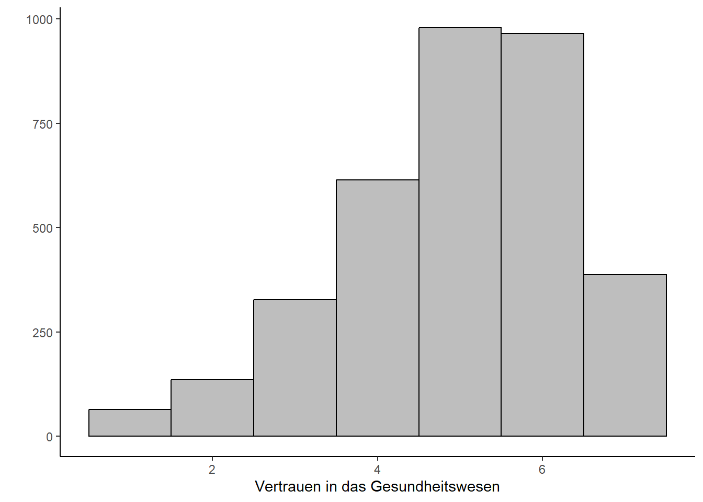

Die Varianzanalyse

Die Varianzanalyse weitet den Grundgedanken des t-Tests aus, indem sie den simultanen Vergleich von Gruppenmittelwerten über mehr als zwei Gruppen erlaubt. Die einfaktorielle Varianzanalyse definiert die Gruppen dabei anhand eines Faktors (einer unabhängigen Variable), die mehrfaktorielle Varianzanalyse erlaubt mehrere unabhängige kategoriale Variablen im Modell, ist aber nicht mit der multivariaten Varianzanalyse (MANOVA) zu verwechseln, die auch mehrere metrische abhängige Variablen gleichzeitig zulässt. Wenn die Gruppierungsvariable (also die unabhängige Faktor-Variable) mehr als zwei Gruppen unterscheidet, müssen nach der Anova Post-Hoc Tests durchgeführt werden. Denn sollte die Varianzanalyse insgesamt signifikante Werte liefern, wurde zwar festgestellt, dass es überzufällige Unterschiede zwischen den durch die Faktorstufen definierten Gruppen gibt, bei drei und mehr Faktorstufen bleibt aber noch unklar, auf welchen Gruppenunterschieden dieses Ergebnis beruht. Post hoc-Tests liefern spezifischere Informationen dazu, welche Gruppenmittelwerte signifikant voneinander abweichen.
1 Datenmanagement
Wir laden zunächst die für dieses Skript benötigten Pakete und legen unseren Grafikhintegrund sowie die Formatierung von Zahlen fest.
Anschließend laden wir unseren Datensatz:
Um mit dem Datensatz arbeiten zu können benötigen wir einige grundlegende Schritte des Datenmanagements für ausführliche Erklärungen siehe hier. Für die Varianzanalyse möchten wir uns anschauen, wie sich der Gesundheitszustand (und das Alter) der Befragten auf ihr Vertrauen in das Gesundheitswesen auswirkt. Wir nutzen dazu die folgenden Variablen:
| Variable | Beschreibung | Ausprägungen |
|---|---|---|
| hs01 | Gesundheitszustand der Befragten | -42 = Datenfehler -11 = TNZ Split -9 = Keine Angabe 1 = Sehr Gut 2 = Gut 3 = Zufriedenstellend 4 = Weniger Gut 5 = Schlecht |
| age | Alter der Befragten | -32 = Nicht Generierbar |
| pt01 | Vertrauen in das Gesundheitswesen | -42 = Datenfehler -11 = TNZ Split -9 = Keine Angabe 1 = Gar kein Vertrauen … 7 = Großes Vertrauen |
Innerhalb unseres Datenmanagements schließen wir fehlerhafte und fehlende Werte der Variablen sex, agef und pt12 aus und benennen falls nötig die Variablen um:
daten <- daten %>%
filter(., hs01 > 0 & pt01 > 0 & age > 0) %>%
rename(., gesund = hs01,
trustges = pt01) %>%
mutate(gesund = haven::as_factor(gesund),
trustges = as.numeric(trustges),
agef = dicho(age, as.num = T) %>% factor(levels = c(0,1), labels = c("jung", "alt")))- 1
- Wir schließend fehlende Werte (siehe Tabelle oben aus). Da diese alle negativ sind, können wir einfach alle Werte kleiner als 0 ausschließen.
- 2
- Hier benennen wir die Variablen anders um unsere weitere Arbeit zu vereinfachen.
- 3
- Wir speichern die Variablen als Faktoren. Wir nutzen dabei die Funktion as_factor aus dem haven Paket um die Bezeichnungen der Faktorstufen direkt zu übernehmen.
- 4
- Wir kodieren die Variable Alter in eine dichotome Variable (jung und alt) um. Die Aufteilung geschieht anhand des Medians der Verteilung.
2 Voraussetzungsprüfung für einfaktorielle und mehrfaktorielle Varianzanalyse
Die Varianzanalyse ist ein statistisches Verfahren, dass bestimmte Voraussetzungen bezüglich der abhängigen und unabhängigen Variablen voraussetzt. Dies sind im Überblick:
- Datenniveau der AV (metrisch) und UV (Faktor)
- Normalverteilung der abhängiven Variablen
- Homogenität der Fehlervarianzen der unabhängigen Variablen
Die meisten Voraussetzungen, die für die Durchführung und Interpretation einer Varianzanalyse erfüllt sein müssen, lassen sich bereits im Vorfeld der eigentlichen Analyse überprüfen. So kann das Messniveau unmitttelbar festgestellt werden. Es gilt für die abhängige (y-)Variable stets, dass sie intervallskaliert sein muss, in R also als ein Vektor vorliegen muss. Die Faktoren bzw. unabhängige(n) (x-) Variable(n) hingegen müssen zwingend nominalskaliert sein und in R demnach als Faktoren vorliegen.
2.1 Überprüfung der Normalverteilung
Eine weitere wichtige, leicht vorab zu prüfende Bedingung, die für eine Varianzanalyse erfüllt sein muss, ist die Normalverteilung der abhängigen Variable. Diese können wir graphisch überprüfen:
#Histogramm ausgeben
ggplot(daten, aes(trustges)) +
geom_histogram(aes(y = after_stat(count)),
color = "black", fill = "grey",
binwidth = 1) +
labs(x = "Vertrauen in das Gesundheitswesen",
y = "")- 1
-
In R nutzen wir das Paket
ggplot2von Wickham et al. um ein Histogramm auszugeben. Zunächst müssen wir hier das Paketggplot2mit dem Befehlggplot()aufrufen. Anschließend spezifizieren wir innerhalb der Klammer unseren Datensatz (hierdaten) und unter aes unsere Variable (hiertrustges). - 2
-
Die Spezifizierungen innerhalb der Klammern unseres Histogramms geben an, dass dieses auf den Zahlen unseres Datensatzes beruhen soll
(aes(y = after_stat(count)), wir die Außenumrandung schwarzcolor = blackund die Füllfarbe grau wünschen (fill = grey). Diese Spezifikationen sind optional, sorgen jedoch für ein schöneres Aussehen unserer Grafik. - 3
-
Mit
binwidth = 1verweisen wir hier auf die Breite der Balken unseres Histogramms. - 4
-
Für ein verschönertes Aussehen unseres Graphen nutzen wir den Befehl
labsum zusätzlich die Achsen zu beschriften.

Wir sehen an der Grafik, dass die Variable Vertrauen in das Gesundheitswesen rechtssteil ist, also die Teilnehmer der Befragung eher ein höheres Vertrauen angegeben haben.
Zusätzliche Gewissheit bezüglich des Vorliegens der Normalverteilung bietet der Kolmogorov-Smirnov-Test oder der Shapiro-Wilk-Test (welcher für kleinere Stichproben zwischen 3 und 5000 Fällen konzipiert ist). In R erhalten wir diese Tests mit dem Befehl LillieTest() aus dem Paket DescTools() bzw. shapiro.test(). Beide Tests testen auf Abweichung von der Normalverteilung, demnach sollte diese nicht signifikant ausfallen (da ein signifikanter Test aussagt, dass eine Abweichung von der Normalverteilung besteht, was wir nicht möchten).
Lilliefors (Kolmogorov-Smirnov) normality test
data: daten$trustges
D = 0.18718, p-value < 0.00000000000000022
Shapiro-Wilk normality test
data: daten$trustges
W = 0.92102, p-value < 0.00000000000000022Im vorliegenden Beispiel sind beide Tests signifikant. Allerdings reagieren beide Tests insbesondere bei großen Stichproben sehr sensibel, sodass bereits leichte Abweichungen von der Normalverteilung (etwa durch Ausreißer) die Tests signifikant werden lassen; in diesen Fällen ist es sinnvoll eher auf die graphische Überprüfung (siehe oben) zu schauen. Sowohl der Kolmogorov-Smirnov-Test als auch die Grafik lassen jedoch nicht auf eine perfekte Normalverteilung unserer abhängigen Variablen schließen. In diesem Fall kann die Varianzanalyse dennoch gerechnet werden, da solange die Verteilung nicht extrem steil ist, das Verfahren einigermaßen robust ist. Bei einer sehr starken Verletzung der Normalverteilung müsste ggf. auf nicht parametrische Tests ausgewichen werden.
2.2 Überprüfung der Homogenität der Fehlervarianzen
Die letzte Voraussetzung, die für eine Varianzanalyse erfüllt sein muss, ist die Homogenität der Fehlervarianzen. Um diese zu testen, nutzen wir den Levene-Test auf Varianzhomogenität. Hierfür nutzen wir die Funktion leveneTest()aus dem Paket car.
#Levene-Test für einfaktorielle Varianzanalyse
daten %>%
leveneTest(trustges ~ gesund, data = ., center = mean)
#Levene-Test für mehrfaktorielle Varianzanalyse ausgeben
daten %>%
leveneTest(trustges ~ gesund*agef, data = ., center = mean)- 1
- Innerhalb der Klammer müssen wir zunächst unsere abhängige Variable angeben. Danach folgt eine Tilde (~). Im Anschluss müssen wir unsere unabhängige(n) Variablen angeben. Die Tilde sagt quasi, dass unsere abhängige Variable durch unsere unabhängigen Variablen bestimmt wird. Haben wir nur eine abhängige Variable, so geben wir diese an.
- 2
- Haben wir mehrere unabhängige Variablen so können wir diese mit einem * verbinden. Anschließend wird der Test für beide Variablen sowie den Interaktionsterm ausgeben.
Levene's Test for Homogeneity of Variance (center = mean)
Df F value Pr(>F)
group 4 5.9109 0.00009738 ***
3470
---
Signif. codes: 0 '***' 0.001 '**' 0.01 '*' 0.05 '.' 0.1 ' ' 1
Levene's Test for Homogeneity of Variance (center = mean)
Df F value Pr(>F)
group 9 5.2437 0.0000004058 ***
3465
---
Signif. codes: 0 '***' 0.001 '**' 0.01 '*' 0.05 '.' 0.1 ' ' 1Wenn der Levene-Test statistisch signifikant ausfällt, sollte die Hypothese homogener Varianzen abgelehnt werden. Falls der Test wie im vorliegenden Fall signifikant ausfällt (da der Pr(>F-Wert) kleiner als 0.05 ist) wurde die Voraussetzung der Homogenität der Fehlervarianzen verletzt. In einem solchen Fall können wir wahlweise auf nicht-parametrische Tests ausweichen, oder die Varianzanalyse dennoch berechnen, wenn wahlweise die deskriptiven Kennwerte keine allzu große Streuung aufweisen, oder wir einen alternativen Posthoc-Test wie Tamhame T2 wählen.
3 Einfaktorielle Varianzanalyse (ohne Messwiederholung)
Nachdem wir die Voraussetzungen geprüft haben, schauen wir uns die einfaktorielle Varianzanalyse an. Im vorliegenden Beispiel möchten wir überprüfen, inwiefern sich der Gesundheitszustand (Variable gesund; Von sehr gut bis schlecht) auf das Vertrauen in das Gesundheitswesen (Variable trustges) auswirkt.
3.1 Deskriptive Statistiken
daten %>%
group_by(gesund) %>%
summarise(Mittelwert = mean(trustges, na.rm = T),
Standardabweichung = sd(trustges, na.rm = T)) %>%
kable(digits = 2, col.names = c("Gesundheitszustand", "M", "SD"), caption = "Descriptives Vertrauen")- 1
-
Zunächst möchten wir uns anhand von deskriptiven Statistiken einen Überblick über unsere Daten verschaffen. Dafür nutzen wir die
group_by-Funktion in Kombination mit dersummarise-Funktion. - 2
-
Im nachfolgenden Schritt haben wir mit Hilfe des Befehls
kable()aus dem Paketknitrdas Aussehen unserer Tabelle verschönert. Dieser Schritt ist optional.
| Gesundheitszustand | M | SD |
|---|---|---|
| SEHR GUT | 5.13 | 1.45 |
| GUT | 4.99 | 1.32 |
| ZUFRIEDENSTELLEND | 4.85 | 1.37 |
| WENIGER GUT | 4.82 | 1.48 |
| SCHLECHT | 4.71 | 1.55 |
Anhand der deskriptiven Statistiken sehen wir, dass das Vertrauen in das Gesundheitswesen am höchsten ausgeprägt ist, bei Personen die einen guten Gesundheitszustand aufweisen. Ob dieser augenscheinliche Unterschied auch statistisch signifikant ist, möchten wir in einem nächsten Schritt mit der einfaktoriellen ANOVA berechnen.
3.2 Durchführen der Varianzanalyse
Zur Berechnung der Varianzanalye nutzen wir die Funktion aov_car aus dem afex-Paket:
#Einfaktorielle ANOVA
fit <- daten %>%
aov_car(trustges ~ gesund + Error(respid), data = ., anova_table = "pes")
print(fit)- 1
-
Innerhalb der Funktion aov_car müssen wir zunächst die abhängige Variable (
trustges) angeben und nach einer Tilde die unabhängige Variabel (gesund). Zudem müssen wir den Zusatz+ Error()nutzen un in der Klammer die Fallid (hierrespid) angeben. Alles speichern wir als Objektfitwelches wir anschließend mitprintaufrufen.
Anova Table (Type 3 tests)
Response: trustges
Effect df MSE F pes p.value
1 gesund 4, 3470 1.91 5.46 *** .006 <.001
---
Signif. codes: 0 '***' 0.001 '**' 0.01 '*' 0.05 '+' 0.1 ' ' 13.3 Interpretation des Outputs
Effect zeigt die unabhängige Variable des Modells, in diesem Fall die Variable Gesundheitszustand(gesund). Die vier bedeutet, dass hier insgesamt eine Gruppe mit 4 anderen (= fünf Ausprägungen) verglichen wurde.
Über die Werte der zweiten und vierten Spalte, die Freiheitsgrade (df) und die F-Werte (F) ließe sich, wenn man es wollte, der emprische F-Wert in der F-Tabelle, mit dem kritischen Wert (theoretischen F-Wert) vergleichen, um zu prüfen, ob die Nullhypothese, dass keine Unterschiede zwischen den durch die jeweilige Variable definierten Gruppen bestehen, verworfen werden darf. Diesen Aufwand kann man sich allerdings sparen, da R in der Spalte p.value die umgekehrte Aussage macht, dass die Nullhypothese mit der dort berichteten Fehlerwahrscheinlichkeit verworfen werden kann. Beim per Konvention in den Sozialwissenschaften mindestens geltenden Konfidenz-Niveau von 95%, dürfen im Umkehrschluss also für alle Modellterme signifikante Unterschiede in der Grundgesamtheit angenommen werden, die hier einen Wert <.05 aufweisen. Die Spalte ist damit die wichtigste der gesamten Tabelle! Im vorliegenden Datenbeispiel ist demnach ein signifikanter Unterschied des Gesundheitszustandes im Bezug auf das Vertrauen in das Gesundheitswesen ersichtlich.
Die mittlere quadratische Abweichung (MSE) oder Fehlervarianz ist die Summe der Abweichungsquadrate aller Werte vom jeweiligen Gruppenmittelwert. Berechnet wird diese durch die Quadratsummer der Fehlerresiduen geteilt durch die Freiheitsgrade. Sie gibt damit die Varianz innerhalb der einzelnen Gruppen (=nicht erklärte Varianz) wieder.
Die Spalte pes steht für das partielle Eta-Quadrat und gibt die Erklärungskraft der einzelnen Faktoren im Hinblick auf die anhängige Variable an – partiell ist das Eta2, da es um die Einflüsse der übrigen Modellgrößen bereinigt ist (für unifaktorielle Analysen wie im vorliegenden Fall ist dies nicht relevant, allerdings für die multifaktorielle ANOVA). Im Datenbeispiel hat demnach der Gesundheitszustand (und damit auch unser Gesamtmodell) eine Erklärkraft von 0.6 Prozent für Unterschiede im Vertrauen auf das Gesundheitssystem. Allerdings wissen wir lediglich, dass sich unsere Gruppen signifikant unterscheiden, nicht jedoch, ob sich alle Gruppen unterscheiden, oder lediglich einzelne. Daher benötigen wir die Posthoc-Tests.
3.4 PostHocTests
Zuletzt müssen wir die Posthoc-Tests berechnen, welche uns Aufschluss darüber geben, welche unserer Gruppen sich unterscheiden. Es gibt verschiedene Posthoc-Tests. Grundsätzlich ist der Tukex-Post-Hoc Test zu empfehlen, welche wir über die Funktion emmeansaus dem emmeans-Package aufrufen. Bei fehlender Varianzhomogenität können wir zudem den tamhane-T2 Test nutzen. Dieser basiert allerdings auf einem aov-Objekt, daher geben wir hier mit aov die ANOVA erneut aus. Innerhalb von emmeans können wir hingegen einfach auf unser zuvor spezifiziertes Modell fit verweisen, müssen allerdings noch mit specs= angeben, auf Basis welcher Variablen der Gruppenvergleich durchgeführt werden soll.
contrast estimate SE df t.ratio p.value
SEHR GUT - GUT 0.1336 0.0696 3470 1.919 0.3075
SEHR GUT - ZUFRIEDENSTELLEND 0.2749 0.0734 3470 3.746 0.0017
SEHR GUT - WENIGER GUT 0.3077 0.0924 3470 3.332 0.0078
SEHR GUT - SCHLECHT 0.4123 0.1474 3470 2.797 0.0414
GUT - ZUFRIEDENSTELLEND 0.1413 0.0567 3470 2.490 0.0930
GUT - WENIGER GUT 0.1741 0.0798 3470 2.183 0.1864
GUT - SCHLECHT 0.2787 0.1398 3470 1.993 0.2696
ZUFRIEDENSTELLEND - WENIGER GUT 0.0328 0.0831 3470 0.395 0.9949
ZUFRIEDENSTELLEND - SCHLECHT 0.1374 0.1418 3470 0.969 0.8691
WENIGER GUT - SCHLECHT 0.1046 0.1524 3470 0.686 0.9595
P value adjustment: tukey method for comparing a family of 5 estimates SEHR GUT GUT ZUFRIEDENSTELLEND WENIGER GUT
GUT 0.4692 - - -
ZUFRIEDENSTELLEND 0.0029 0.1037 - -
WENIGER GUT 0.0174 0.3186 1.0000 -
SCHLECHT 0.1230 0.5471 0.9923 0.9996 3.5 Interpretation der Posthoc-Tests und des Gesamtmodells
Hier interessiert uns jeweils der p-value (für den Tamhame T2 Test wird uns nur dieser angezeigt). Werte unter .05 bedeuten, dass zwischen diesen Gruppen ein signifikanter Mittelwertunterschied besteht.
In unserem Beispiel sehen wir signifikante Unterschiede zwischen Personen die einen sehr guten Gesundheitszustand aufweisen und Personen, denen es gesundheitlich schlechter geht (Kategorien zufriedenstellender Gesundheitszustand, weniger guter Gesundheitszustand und je nach Test schlechter Gesundheitszustand).
3.6 Visualisierung der Gruppenunterschiede mittels Fehlerbalken
Oftmals lohnt es sich, die Ergebnisse der Varianzanalyse auch graphisch darzustellen. Hierzu nutzen wir Fehlerbalkendiagramme:
daten %>%
ggline(x= "gesund",
y = "trustges",
add = "mean_ci",
title = "Vertrauen in das Gesundheitswesen",
xlab = "Gesundheitszustand",
ylab = "Vertrauen in das Gesundheitswesen") +
rotate_x_text(45)- 1
-
Wir wählen auf der x-Achse die Variable
gesundaus und auf der y-Achse die Variabletrustges. - 2
-
Wir fügen für die jeweiligen Faktorstufen der Variablen
gesunddie Mittelwerte sowie Konfidenzintervalle hinzu. - 3
- Wir bennenen unsere Grafik um.
- 4
-
Da die Labels unserer Faktorstufen sehr lang sind, drehen wir diese um 45 Grad. Dies geschieht mit der Funktion
rotate_x_text()aus dem Paketggpubr.

Die Ergebnisse der Varianzanalyse werden zumeist in Textform dargestellt. Dafür werden folgende Informationen benötigt:
✅ die Mittelwerte und Standardabweichung der einzelnen Faktorstufen
✅ der df-Wert
✅ der F-Wert
✅ der p-Wert
✅ der pes-Wert
✅ die Posthoc-Test Ergebnisse
Das Format ist üblicherweise:
Beispiel: Personen mit einem sehr guten Gesundheitszustand haben durchschnittlich ein höheres Vertrauen in das Gesundheitswesen (M = 5.13;SD=1.45) als Personen mit einem guten (M = 4.99;SD=1.32), zufriedenstellenden (M = 4.85;SD=1.37), weniger guten (M = 4.82;SD=1.48) oder schlechtem (M = 4.71;SD=1.55) Gesundheitszustand . Der Gesundheitszustand hat dabei einen signifikanten Einfluss auf das Vertrauen in das Gesundheitswesen (F3470)=5,46,p<0,001. Die Effektstärke nach Cohen (1992) liegt bei alpha=0,006 und entspricht einem kleinen Effekt. Post-Hoc Paarvergleiche mit Tamhames ergaben, dass sich der Mittelwert für die Personen mit sehr guten Gesundheitszustand signifikant von den Personen mit zufriedenstellendem (p<0.029) und weniger gutem (p<0.0174) Zustand unterscheidet. Die anderen Gesundheitsgruppen unterscheiden sich hingegen nicht signifikant voneinander.
3.7 Mehrfaktorielle Varianzanalyse
In der mehrfaktoriellen Varianzanalyse können wir unser Modell aus der einfachen Varianzananlyse erweitern. In diesem Beispiel nutzen wir neben der Variablen zum Gesundheitszustand (gesund) zusätzlich die Variable Alter (agef) um das Vertrauen in das Gesundheitssystem (trustges) vorherzusagen.
Zunächst möchten wir uns anhand von deskriptiven Statistiken einen Überblick über unsere Daten verschaffen.
#Deskriptive Statistiken ausgeben
daten %>%
group_by(gesund, agef) %>%
summarise(Mittelwert = mean(trustges, na.rm = T),
Standardabweichung = SD(trustges, na.rm = T)) %>%
kable(digits = 2, col.names = c("Gesundheitszustand", "Alter", "M", "SD"), caption = "Descriptives Vertrauen")| Gesundheitszustand | Alter | M | SD |
|---|---|---|---|
| SEHR GUT | jung | 5.15 | 1.42 |
| SEHR GUT | alt | 5.05 | 1.57 |
| GUT | jung | 4.89 | 1.30 |
| GUT | alt | 5.14 | 1.35 |
| ZUFRIEDENSTELLEND | jung | 4.58 | 1.42 |
| ZUFRIEDENSTELLEND | alt | 5.01 | 1.31 |
| WENIGER GUT | jung | 4.50 | 1.60 |
| WENIGER GUT | alt | 4.97 | 1.40 |
| SCHLECHT | jung | 4.41 | 1.95 |
| SCHLECHT | alt | 4.82 | 1.39 |
Zunächst können wir unsere deskriptiven Statistiken betrachten. Hier interessieren uns insbesondere die Mittelwerte für die einzelnen Gruppen. Diese Mittelwerte im Fließtext kurz zu erwähnen, gehört zum „guten Ton” bei der Auswertung einer Varianzanalyse und sollte daher nicht vergessen werden.
Nun können wir unsere ANOVA aufstellen. Es gibt verschiedene Möglichkeiten eine ANOVA zu berechnen, namentlich Type I, II und III. Die einzelnen Typen unterscheiden sich darin, wie die Parameter (insbesondere die Quadratsumme) berechnet wird. Typ I sollte vor allem für ausgeglichene Daten verwendet werden, also Daten bei der für jede Gruppe die gleiche Anzahl an Fällen vorliegen. Ist dies nicht der Fall, sollte Typ II oder Typ III (beispielsweise die Option der Anova in SPSS) verwendet werden. Der typische Befehl für eine Anova in R ist der Befehl aov(). Dieser ist jedoch nur für die Typ I Anova ausgelegt, daher nutzen wir hier erneut den Befehl aov_car() (sowie den distict-Befehl) aus dem afex-Paket welcher standardmäßig die Anova nach Typ III berechnet. Im Prinzip nutzen wir die selbe Syntax wie bei der unifaktoriellen Anova. Wir ergänzen allerdings unsere zweitere unabhängige Variable, beziehungsweise verbinden die beiden unabhängigen Variablen mit einem *. Dadurch erhalten wir sowohl die Werte für die einzelnen Variablen als auch für den Interaktionsterm, also das Zusammenspiel der Variablen.
fit2 <- daten %>%
afex::aov_car(trustges ~ gesund * agef + Error(respid),
data = ., anova_table = "pes")
print(fit2)Anova Table (Type 3 tests)
Response: trustges
Effect df MSE F pes p.value
1 gesund 4, 3465 1.89 7.66 *** .009 <.001
2 agef 1, 3465 1.89 14.63 *** .004 <.001
3 gesund:agef 4, 3465 1.89 2.93 * .003 .020
---
Signif. codes: 0 '***' 0.001 '**' 0.01 '*' 0.05 '+' 0.1 ' ' 13.8 Interpretation des Outputs
Die Erläuterungen der einzelnen Parameter sind gleich zu den Erläuterungen der unifaktoriellen ANOVA, daher werden diese nicht wiederholt. Es zeigt sich, dass der Gesundheitszustand erneut einen signifikanten Einfluss auf das Vertrauen in das Gesundheitswesen hat (welcher im vorliegenden Modell etwas höher mit 0.9 Prozent erklärter Varianz ausfällt). Zusätzlich hat neben der Gesundheitszustand auch das Alter der Befragten einen signifikanten, wenngleich geringeren Einfluss auf das Vertrauen in das Gesundheitswesen. Zudem sehen wir einen signifikanten Einfluss der Interaktion von Alter und Gesundheitszustand (gesund:agef4).
Im Anschluss müssen wir, wie in der univariaten ANOVA, die Posthoc-Tests berechnen (im vorliegenden Fall können wir lediglich den Tukey-Test berechnen, das der Tamhame-Test nur für einfaktorielle Designs funktioniert).
3.8.1 Post-Hoc Tests
contrast estimate SE df t.ratio
SEHR GUT jung - GUT jung 0.26152 0.0818 3465 3.198
SEHR GUT jung - ZUFRIEDENSTELLEND jung 0.56895 0.0971 3465 5.861
SEHR GUT jung - WENIGER GUT jung 0.65126 0.1406 3465 4.632
SEHR GUT jung - SCHLECHT jung 0.73979 0.2727 3465 2.713
SEHR GUT jung - SEHR GUT alt 0.09591 0.1434 3465 0.669
SEHR GUT jung - GUT alt 0.00434 0.0871 3465 0.050
SEHR GUT jung - ZUFRIEDENSTELLEND alt 0.13472 0.0858 3465 1.570
SEHR GUT jung - WENIGER GUT alt 0.17433 0.1083 3465 1.609
SEHR GUT jung - SCHLECHT alt 0.32668 0.1692 3465 1.931
GUT jung - ZUFRIEDENSTELLEND jung 0.30743 0.0853 3465 3.602
GUT jung - WENIGER GUT jung 0.38974 0.1328 3465 2.935
GUT jung - SCHLECHT jung 0.47827 0.2688 3465 1.779
GUT jung - SEHR GUT alt -0.16560 0.1357 3465 -1.220
GUT jung - GUT alt -0.25718 0.0738 3465 -3.484
GUT jung - ZUFRIEDENSTELLEND alt -0.12680 0.0723 3465 -1.755
GUT jung - WENIGER GUT alt -0.08719 0.0980 3465 -0.890
GUT jung - SCHLECHT alt 0.06517 0.1628 3465 0.400
ZUFRIEDENSTELLEND jung - WENIGER GUT jung 0.08231 0.1427 3465 0.577
ZUFRIEDENSTELLEND jung - SCHLECHT jung 0.17084 0.2738 3465 0.624
ZUFRIEDENSTELLEND jung - SEHR GUT alt -0.47303 0.1455 3465 -3.252
ZUFRIEDENSTELLEND jung - GUT alt -0.56461 0.0905 3465 -6.240
ZUFRIEDENSTELLEND jung - ZUFRIEDENSTELLEND alt -0.43423 0.0892 3465 -4.868
ZUFRIEDENSTELLEND jung - WENIGER GUT alt -0.39462 0.1111 3465 -3.553
ZUFRIEDENSTELLEND jung - SCHLECHT alt -0.24226 0.1710 3465 -1.417
WENIGER GUT jung - SCHLECHT jung 0.08853 0.2921 3465 0.303
WENIGER GUT jung - SEHR GUT alt -0.55535 0.1775 3465 -3.129
WENIGER GUT jung - GUT alt -0.64692 0.1361 3465 -4.752
WENIGER GUT jung - ZUFRIEDENSTELLEND alt -0.51655 0.1353 3465 -3.818
WENIGER GUT jung - WENIGER GUT alt -0.47693 0.1506 3465 -3.167
WENIGER GUT jung - SCHLECHT alt -0.32458 0.1989 3465 -1.632
SCHLECHT jung - SEHR GUT alt -0.64387 0.2935 3465 -2.194
SCHLECHT jung - GUT alt -0.73545 0.2704 3465 -2.719
SCHLECHT jung - ZUFRIEDENSTELLEND alt -0.60507 0.2700 3465 -2.241
SCHLECHT jung - WENIGER GUT alt -0.56546 0.2780 3465 -2.034
SCHLECHT jung - SCHLECHT alt -0.41311 0.3069 3465 -1.346
SEHR GUT alt - GUT alt -0.09158 0.1390 3465 -0.659
SEHR GUT alt - ZUFRIEDENSTELLEND alt 0.03880 0.1382 3465 0.281
SEHR GUT alt - WENIGER GUT alt 0.07841 0.1532 3465 0.512
SEHR GUT alt - SCHLECHT alt 0.23077 0.2009 3465 1.149
GUT alt - ZUFRIEDENSTELLEND alt 0.13038 0.0782 3465 1.666
GUT alt - WENIGER GUT alt 0.16999 0.1025 3465 1.659
GUT alt - SCHLECHT alt 0.32234 0.1655 3465 1.948
ZUFRIEDENSTELLEND alt - WENIGER GUT alt 0.03961 0.1013 3465 0.391
ZUFRIEDENSTELLEND alt - SCHLECHT alt 0.19197 0.1648 3465 1.165
WENIGER GUT alt - SCHLECHT alt 0.15236 0.1776 3465 0.858
p.value
0.0453
<.0001
0.0002
0.1688
0.9997
1.0000
0.8626
0.8440
0.6480
0.0119
0.0964
0.7484
0.9693
0.0179
0.7635
0.9968
1.0000
0.9999
0.9998
0.0384
<.0001
0.0001
0.0141
0.9222
1.0000
0.0558
0.0001
0.0053
0.0498
0.8328
0.4609
0.1661
0.4288
0.5748
0.9428
0.9997
1.0000
1.0000
0.9795
0.8145
0.8183
0.6362
1.0000
0.9775
0.9976
P value adjustment: tukey method for comparing a family of 10 estimates 3.9 Interpretation der Posthoc-Tests und des Gesamtmodells
3.9.1 ## Visualisierung der Interaktionen
Um einen möglichen Interaktionseffekt auch anschaulich vermitteln bzw. oft auch verstehen zu können, empfiehlt es sich, diesen als Diagramm darzustellen. Hierzu nutzen wir die Pakete emmeans und ggplot2.
#Interaktionsplot ausgeben
emmip(fit2, agef ~ gesund) +
labs(title = "Geschätzes Randmittel von Vertrauen in das Gesundheitswesen",
y = "Geschätzte Randmittel",
x = "Gesundheitszustand")
emmip(fit2, gesund ~ agef) +
labs(title = "Geschätzes Randmittel von Vertrauen in das Gesundheitswesen",
y = "Geschätzte Randmittel",
x = "Alter der Befragten")